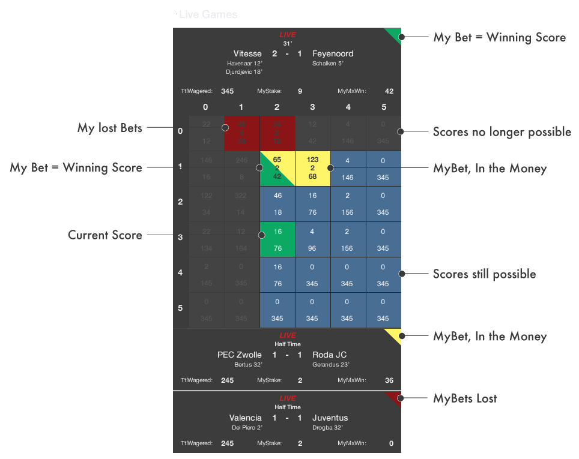

BTCsoccer is a P2P soccer gambling website which takes Bitcoin Bets placed on end-results of soccer matches. Multiple Bets can be placed per player per match.
Our default & minimum stake per bet is 2mBTC (0.002BTC) but you are free to increase your stakes.
Our Chat section enables you to interact with others and with BTCsoccer.com.
The site is registration / login free: we take pure Bitcoin Bets and return your profits into your Bitcoin address within minutes after the matches' end.
If you use an online wallet service you must specify your personal wallet address for payout purposes. Profits will be paid out to the sender address if no return wallet address is specified!
Make sure that you are over 18years old and it is legal in your country to play online gambling games.
Don't wager any Bitcoin that you can not afford to loose.
The Stats section keeps track of a recent history of all (your) bets, transactions and return payment statuses.
Winnerless & Invalid bets are 100% refunded (payment status: Refund).
A 2% commission fee is yielded on the profits of winning bets.
The total amount of Bitcoin wagered on a the winning bet - minus the 2% house commission fee - is automatically transferred into the Bitcoin wallets of the winning bettor(s).
An example: The total wager on a match is 400mBTC. Your stake in the correct end result is 6 from a total of 22 wagered on that score. BTCsoccer will transfer 6/22*400 – (6/22*400/100*2) = 90.91mBTC into your Bitcoin wallet.
Wagers will be 100% refunded should the match NOT produce a winning bettor.
Select a match from the Games section. Live matches are closed for betting as the match has already begun.
Place a bet by picking (an) end result(s) from the matches' ScoreGrid. Selected scores are added to the BetSlip from where stakes are confirmed per bet.
Upon clicking Check Out at the bottom of the BetSlip you will be presented with a QR code and a link to process your Bet transaction. Select either of these methods to pay your Bitcoin wager.
Once paid, your bets are marked yellow on the matches' score grids.
The ScoreGrid is a quick and simple way to place a bet. It facilitates scores up to a 5-5 goal end result. The horizontal rows represent goals for the home team, the vertical columns show the away team.
The numbers in each cell represent the following:
Live games have started and the ScoreGrid is closed for new bets. A live timer shows playtime and other match statistics are present. The In-Game ScoreGrid UI keeps you live up to date regarding game & bet-play.
You pay with a Bitcoin wallet application. Download one here: bitcoin.org or use a web wallet.
Upon Checkout you are presented with a QR code to scan and/or a payment link to click to pay with your Bitcoin wallet application.
Your winnings - minus the house edge - will automatically transferred into your Bitcoin address within minutes after the match ends.
BTCsoccer does NOT require registration or Login.
Bitcoin is pseudonymous as the addresses for all Bitcoin transactions are forever stored in the blockchain. As far as these addresses are linked to your identity, they will be for ever linked to you.
We support our promise with the return of bettors on this site. Also see the Stats page for global transaction overview.
The blockchain is transparent and open to anyone to ensure that we pay our bettors.
See the Stats page for global transaction overview and the 20 Most Recent Outgoing Payments for our pay-out details.
No sorry, all bets are final.
If they were not ... we would be flawed ...
You can contact us at:
Also, in the Chat section of the site, users () & () are BTCS team members. They can help you with your questions or may post platform wide messages.
Bitcoin is the first established P2P de-centralized digital currency. Bitcoin is open source and transparent: nobody owns or controls Bitcoin and everyone can take part.
See: bitcoin.org